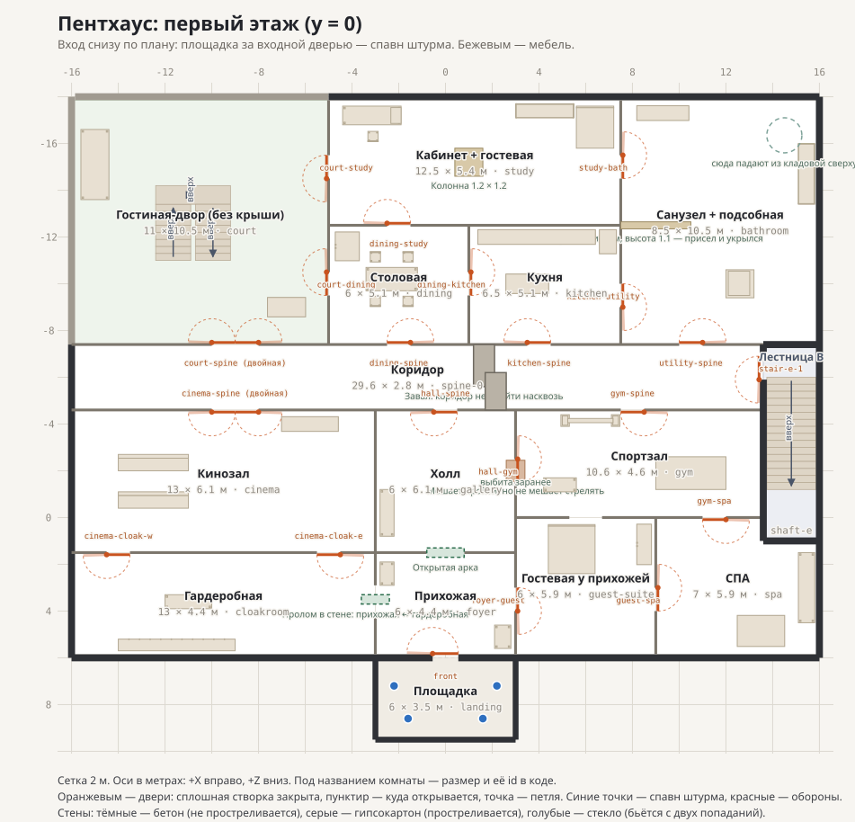
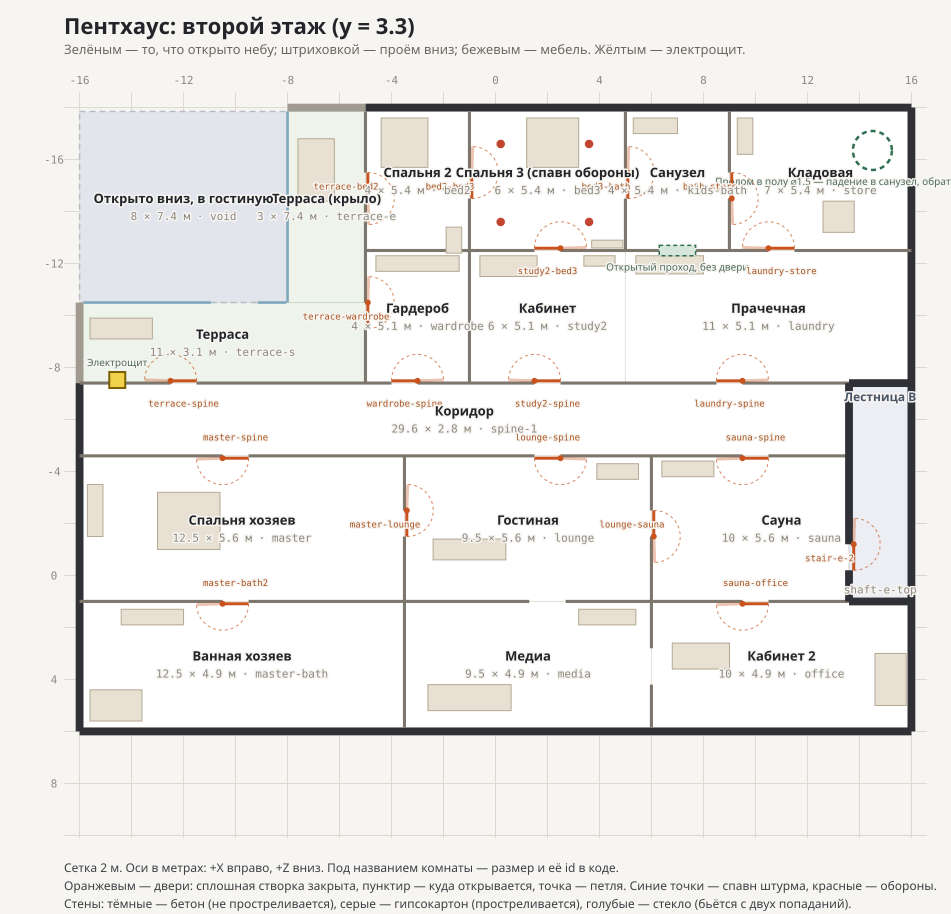

Нажмите, чтобы взять управление
Вы убиты
| Игрок | Команда | Убийства | Смерти | Пинг |
|---|
Тёмный пентхаус на два этажа. Одна жизнь за раунд. Слушай.
Вдвоём за одним компьютером: создайте комнату, откройте второе окно этого же браузера и введите код. Такая пара соединяется напрямую, без интернета и роутера.
Тихий шаг включается один раз и держится сам; бег его сбрасывает. Лампы простреливаются. Гипсокартонные стены — тоже. Бетон — нет. Выбитая дверь распахивается с одного удара, но закрыть её уже нельзя — а вот заклиненную придётся бить дважды. Шаги слышно дальше, чем вам кажется.
Передайте код второму игроку.
Что стоит на каждом стволе. Сохраняется между матчами.
До начала подготовки 0:30
Пока идёт отсчёт, обе стороны стоят на месте. Дальше — полминуты подготовки: оборона расходится по квартире, штурм ждёт на площадке. Снаряжение ставится, бросается и включается клавишей G — один слот на всё, так что ПНВ вместо светошумовых и фаеры вместо клиньев. На террасе есть электрощит: F у него гасит свет во всём здании, обеим сторонам сразу.
С одного попадания не убивает ничто, кроме AMR-50 — и той нужна прямая линия, без стены на пути. Автомату нужно три попадания в корпус, пистолету-пулемёту четыре, в голову — вдвое меньше. Урон падает с расстоянием, у дроби быстрее всех. Чертежи всех одиннадцати
До начала 0:30


Синим отмечены свои. Противника на плане нет и не будет — вы знаете только то, что видите и слышите сами. План открывается клавишей M, пока идёт подготовка.
Раунд продолжается. Вас всё ещё можно убить.
Собираем пентхаус…
Это тактический шутер от первого лица: он управляется мышью и клавиатурой, а прицеливание использует захват курсора, которого нет на телефонах.
Откройте эту страницу на ноутбуке или ПК.